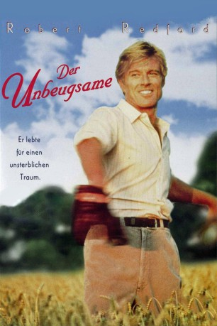
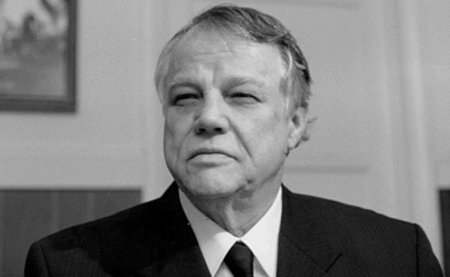
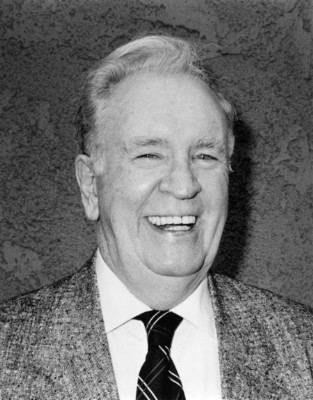
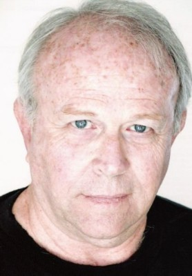
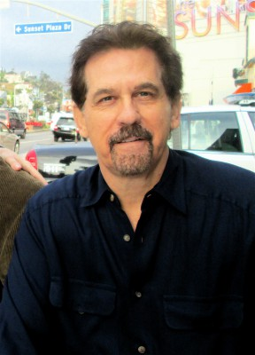
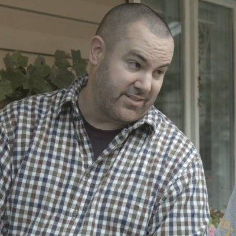
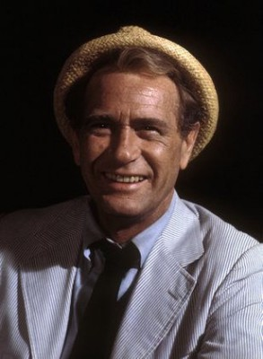

#5677 Der Unbeugsame
Alternativ: The Natural
Auszeichnungen: für 4 Oscars nominiert
 
 IMDB-Wertung: 7.5 / 10
IMDB-Wertung: 7.5 / 10  Metascore: 0
Metascore: 0 
Roy Hobbs ist ein vielversprechender Nachwuchsspieler, doch sein Traum vom Ruhm in der Oberliga platzt, als eine rätselhafte Frau und eine Kugel seine Karriere jäh beenden. 16 Jahre später findet Hobbs, mit seinem Baseballschläger 'Wonderboy' aus Kindertagen zum Baseball zurück, wenn auch nur im Außenseiterteam der 'New York Knights'. Gelingt es Hobbs, seine körperlichen Schmerzen und alle negativen Einflüsse um ihn herum zu überwinden, um die 'Knights' zum Sieg zu führen?
Jahr: 1984
Dauer: 137 Minuten
FSK: 6
Land: USA Studio: TriStar PicturesTonspuren:
Untertitel:
Auflösung: 1080p (1920x1040) Größe: 9308 MB
Genre: Drama, Sport
Regisseur:  Barry Levinson
Barry Levinson
Drehbuch: Bill Gallagher
Soundtrack:
Darsteller:
 Robert Redford als Roy Hobbs
Robert Redford als Roy Hobbs Robert Duvall als Max Mercy
Robert Duvall als Max Mercy Glenn Close als Iris Gaines
Glenn Close als Iris Gaines Kim Basinger als Memo Paris
Kim Basinger als Memo Paris Wilford Brimley als Pop Fisher
Wilford Brimley als Pop Fisher Barbara Hershey als Harriet Bird
Barbara Hershey als Harriet Bird Robert Prosky als The Judge
Robert Prosky als The Judge Richard Farnsworth als Red Blow
Richard Farnsworth als Red Blow-  Joe Don Baker als The Whammer
-  John Finnegan als Sam Simpson
-  Alan Fudge als Ed Hobbs
- Robert Rich III als Ted Hobbs
 Michael Madsen als Bump Bailey
Michael Madsen als Bump Bailey-  Jon Van Ness als John Olsen
- Danny Aiello III als Emil LaJong
 Mike Starr als Boone
Mike Starr als Boone- Martin Grey als Additional Knight
- Mark Atienza als Young Roy Hobbs , uncredited
 Sean Collins als Additional Knight , uncredited
Sean Collins als Additional Knight , uncredited-  Darren W. Conrad als Teen on Railroad Track at Carnival , uncredited
-  Darren McGavin als Gus Sands , uncredited
- Jack Scalia als Cubs Pitcher , uncredited
- Paul Sullivan Jr. als Young Roy
- Rachel Hall als Young Iris
- Mickey Treanor als Doc Dizzy
- George Wilkosz als Bobby Savoy
- Anthony J. Ferrara als Coach Wilson
- Philip Mankowski als Hank Benz
- Joe Castellano als Allie Stubbs
- Eddie Cipot als Gabby Laslow
- Ken Grassano als Al Fowler
- Robert Kalaf als Cal Baker
- Barry Kivel als Pat McGee
- Steven Kronovet als Tommy Hinkle
- James Meyer als Dutch Schultz
- Sam Green als Murphy
- Joseph Mosso als Additional Knight
- Richard Oliveri als Additional Knight
- Lawrence Couzens als Additional Knight
- Duke McGuire als Additional Knight
- Stephen Poliachik als Additional Knight
- Kevin Lester als Additional Knight
- Joseph Charboneau als Additional Knight
- Robert Rudnick als Additional Knight
- Ken Kamholz als Additional Knight
- Sibby Sisti als Pirates Manager
- Phillip D. Rosenberg als Pitcher Youngberry
- Christopher B. Rehbaum als Pitcher John Rhoades
- Nicholas Koleff als Umpire Augie
- Jerry Stockman als Umpire Babe
Datei: X:\1984\Unbeugsame, Der (1984, FSK6, 1920x1040).mkv seit 09.03.2017
Festplatte: HD 1980-1986
 Es gibt insgesamt 46 Filme in der Gruppe '1984'
Es gibt insgesamt 46 Filme in der Gruppe '1984'